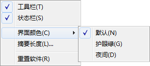
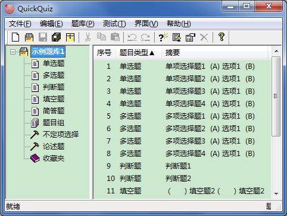
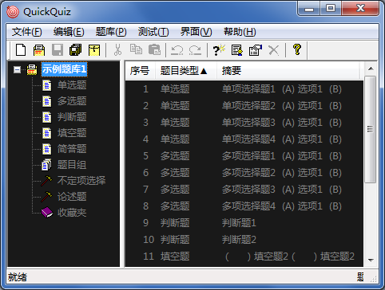

“界面”菜单
“界面”菜单

“界面”菜单的相关说明如下：
显示或隐藏工具栏。
显示或隐藏状态栏。
设定应用程序的主题颜色，可设置为默认（跟随系统主题）、护眼绿、夜间三种模式。
可被更改的颜色区域包括：
- 主界面左侧和右侧窗格
- 消息框
- 非系统对话框及其中全部元素
- 内置文本编辑器的编辑窗
以下分别为护眼绿和夜间模式的示例。

 | 打开题库、保存题库、查找、替换等系统对话框不受界面颜色的限制。 |
|---|
设定主界面右侧窗格摘要的显示最大长度，可选20~120字符。
应用程序在关闭后，将自动在Windows注册表中保存窗口大小、界面颜色、测试设定、最近打开文件等用户信息。若您不再需要这些信息，勾选本项后，应用程序将在下一次退出后清理这些信息。
| 在退出应用程序前，您可以随时取消本项的勾选。 |
|---|
GX Software 2020-2021
V2.0